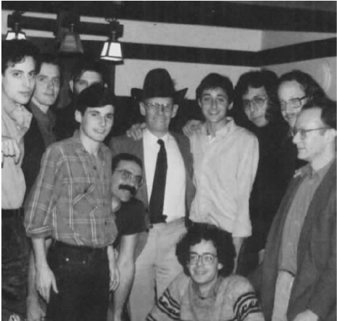

福柯睿智、庄重但又艰深晦涩的文风曾让许多读者饱受折磨，但他最后两本书写得浅显易懂、清晰流畅，让读者颇感慰藉。是临终前的疾病使他达到其作品所反映出的宁静与平和？或仅仅是因为急于在生前完成这一研究而没有时间继续辞藻华丽的繁复文风？依笔者之见，福柯那时已经进入了一个远离在他看来常常“不可忍受”的当下社会的世界，并在那里找到了一种对他极具吸引力的生存模式。
他的主题——自我的伦理建构——自然是从他对现代权力关系的分析中得出的。在他看来，权力关系甚至已经渗透进我们个人身份的内核。毫无疑问，他如此抵制任何固定身份的原因在于，福柯认识到，即便那些表面上看来属于自选的身份也可能只是社会规范的内化。但是，正如福柯把伦理身份的历史建构追溯到基督教的自我阐释学视角及其当代世俗化了的继承者，支配性权力在他的论述中并不显见。
他仍旧利用了“主体”一词的双重语意，大谈伦理规范如何进入个体生活、构建个体身份的“主体化模式”。以对古代文本的考古学分析为源头，这一主体化过程的总体结构当然受到权力关系的影响。该结构包括作为其基础的、与性行为有关的行动（希腊人称为ta aphrodisia，即“阿佛洛狄特 [1] 的事物”，福柯称之为“伦理物质”），还包含在何种意义上使个体接受伦理法则的约束。福柯把它称为“征服模式/主体化模式”（mode of subjection） [2] ，泛指从对社会传统的服从到实现自我满足等等各种行为。这里面除了接受道德法则意味着什么这一问题之外，还有另外一个问题，即主体化过程以何种形式实现，也即它的“展开方式”，这可能包括诸如自觉遵守实践规则，或者相反，突然之间完全改变信仰。此外，这一模式也为道德事业设想了一个最终目的（telos），如实现对自我的控制，或者为来生洗清罪过。
尽管这一图式为权力运作预留了空间，福柯把它应用于古代性伦理的方式却强调了把伦理的主体化当做由看似掌握自身命运的个体实施的过程。结合上述部分例子，他们可能通过严格遵循一套实现自我控制的做法（“自我的技巧”）来完成自我实现的计划。类似地，福柯用明显带有赞赏的语气谈及希腊的“存在的美学”，其中生命就像艺术品一样被创造出来。同样明显的是，福柯关注的焦点远比性伦理宽泛得多。当他还在写作《自我的关怀》时，福柯曾在一次采访中评论说：“比起性，……我对自我的技巧这类问题要更加感兴趣——性枯燥乏味。”［“论伦理的谱系”，《福柯主要作品集》（卷一），第253页］
然而，我们要指出的是，福柯自己已经表明，尤其是在《性经验史》第一卷中，自我创造只能是一种幻觉。我们可能认为，我们的自由就像现代的性解放一样，只是权力关系约束力的内化。福柯可能被古代创造美丽生活的行动所吸引，但较之于众人，他更清楚这一行为与希腊社会的权力结构缠绕在一起。比方说，试想希腊男人与男孩之间的同性恋行为。尽管这样的行为没有受到基督教对本质上邪恶、反常的行为的责难，但它也因政治原因被问题化了，正如福柯在《快感的运用》中特别指出的那样。男孩，作为某个享有主导权力的男性的被动搭档，同时也被当做城邦的未来领袖加以培养。这样的人怎么可能是和妇女及奴隶处在同一位置上的性对象？无论柏拉图如何论及理想的美和心灵的自我主宰，“柏拉图式爱情”的问题都不能从雅典社会的权力关系中剥离开来。
解决这个问题的关键是问题化 这一概念，上文中已顺便提及，实际上它是福柯后期思想的核心观念。问题化构成了个体面临生存时的基本问题与抉择。我的存在被以某种特定的方式问题化，这一事实无疑是由我置身其中的社会权力关系所决定的。但是，尽管生存被问题化了，我还是能够以自身的方式对它所提的问题作出应答，或者更准确地讲，以我在特定历史背景下确定自我身份的方式作出应答。
这里隐含了问题化与边缘化之间的对比关系，尽管福柯从未明确提出。在他引出此术语的古代语境中，被问题化了的是希腊自由男性的生活，而不是那些被边缘化了的群体，比如妇女和奴隶。边缘化对应于一个社会强加在个体身上的最强约束。即使边缘化群体也并非完全被一个社会的权力结构所主宰，因为他们能够参加革命运动（并获得胜利），推翻统治着他们的力量。但他们只能通过与权力的斗争确定自己的身份。社会的“主流”成员，即那些没有被边缘化的成员，受到的约束要小一些。权力网络以一种预期的形式限定了他们，但却允许有较大空间供他们进行进一步的自我限定。与被边缘化的群体不一样，他们在社会中可以占据“合适位置”，给他们提供了以自己的方式进行自我建构的空间。希腊自由男性的“问题化”就属于这种情况。
笔者的观点是，福柯在把话题转到主体的历史（以及古代性经验的历史）的时候，也在无形中把主要的关注焦点从那些生活被边缘化的人群转移到那些生活仅仅被问题化的人群身上。通过这种方式，他不用否认权力的普遍性就巧妙地认可了有些人被允许过一种相对自由、自我创造的生活。在古希腊，这至少包含了一些自由男性；在我们的世界中，它包括了那些像福柯一样有能力也有机会读书和写书的人士。
问题化看似福柯的第三种历史学方法，是对考古学方法和系谱学方法的补充（或替代）。但从严格意义上讲，这种说法是错误的，因为问题化不是一种历史学的方法，而是此类方法研究的对象。转向问题化，就是从边缘化个体转向问题化个体。但福柯在从事古代性经验的问题化研究时，的确对其历史学的方法论作了较大改变。他首先要求对性经验的古代话语结构进行仔细探索，考古学方法当然是这一部分的主要工具。同时，他基本不关心与古代性知识纠结在一起的权力关系。正如我们注意到的，《快感的运用》论及“男孩问题”的政治根源，而《自我的关怀》中则有一个简短的（用福柯自己也承认的话来说，衍生性质的）章节讨论推动希腊向罗马的性经验观转型的社会力量。但福柯早期著作中所说的权力谱系在这两本书中难觅踪迹。
这是因为，系谱学方法主要关注的是权力与我们现代的统治体系相连通的线索。正如福柯在《规训与惩罚》中所说，它是一部关于现在的历史。但古代希腊和罗马的权力体制太过遥远，很难用我们对现代权力结构的理解把它们描绘出来。如果福柯所关心的只是现代权力结构，他可以按照原计划行事，并不需要回溯到比中世纪田园模式的关爱观念更古老的思想了。然而，一旦主题变成问题化及自我对问题化的创造性应答——在权力体制的缝隙中发展起来的问题，古代人就立即成为有趣的研究对象了。然而，这并不是因为他们是某些问题的特殊根源，否则就需要进行系谱学方法的研究了，而是因为古代人对这些问题给出了多种创造性的答案。
福柯不太愿意放弃“系谱学”这个术语，可能是因为这将他与尼采联系在一起。但他已不再把该术语作为怀疑的工具去追踪现代权力无处不在的痕迹。相反，它是对古代世界“存在艺术”的一种（通常是赞赏性的）描述。所谓古代世界的“存在艺术”，就是“那些有意图的自愿行为，凭借它们，男人们不仅给自己树立行为准则，而且还试图使他们的生活成为具有特定艺术价值、符合特定风格标准的艺术品”（《性经验史》第二卷，第10-11页）。除了这个词语本身，它仅表示对自我建构进行随意描述的宽泛概念。然而，这种描述已经不再是复杂外部权力线索的重构，而是伦理转型的内部方案。事实上，它与哲学史，而不是与福柯所用系谱学一词的原初意义更为接近。或者这样表达更好一些：它是历史模式中发生的哲学本身。
我们将在下文回到福柯的最终“哲学”上。但现在，我们首先要关注一下他的古代性经验考古学，理解一下希腊人和罗马人如何把性经验问题化、福柯又想让我们从他们的问题化中知道些什么。对福柯而言，考古学一直都是比较式的研究。这一次，基本的比较点是基督教的性经验观。这里，尽管没有《反基督者》中的修辞暴力，福柯再次成为尼采的传人：他认为基督教性观念的崛起是一种更令人崇敬的古代观念的堕落。同时，福柯明确表示不可能重回古代的方式，因为他们有严重的自身缺陷，无论如何不可能在我们的世界中存在。古代的方式只能作为我们自我创造计划的启发式指南。
在福柯看来，古代人和基督徒在道德准则及行为方面相对来说差别不大。如果把诸如同性关系这样的明显特例除外，两者在确立伦理法则及这些法则所决定的实际行为模式方面就十分相似。然而，当我们考察伦理主体的建构时，重大的差别就出现了。
差异的根源，据福柯所说，是基督教宣称爱的快感（ta aphrodisia）在本质上是邪恶的，因此是伦理拒斥的主要对象。与此相反，对于古代人而言，性是自然的善。性成为了伦理问题化的对象，不是因为性基本上遭到禁止，而是因为性的某些方面可能具有危险性。这是因为性之善的一面体现在我们低层次的动物性之中，因为它们往往涉及剧烈的情感。危险性并不在于这可能成为我们生活的主要部分——对基督徒来说正是如此，而古人则认为这是不可避免也无可厚非的——而在于我们可能因过度沉迷于此而扰乱了正常的生活。
相对于基督徒而言，遵循性伦理的法则就是完全排斥性，其理想就是独身，或者对于不那么伟大的人而言，至少意味着把性严格控制在一夫一妻制婚姻的狭小空间之内。相反，对于古代人而言，这是一个合理使用（chresis）快感的问题，不是避免某些本质上邪恶的行为；是在适度的节制下（当然要考虑到我们讨论的对象是自由男性而非妇女和奴隶）充分投入到性活动中来（异性性生活、同性性生活、婚内性生活、婚外性生活）。
为了遵循他们的性行为法则，古代人试图实现自我主宰（enkrateia），在与自我的斗争中取胜，而这是通过自我控制的训练（askesis）做到的。对于基督徒而言，战争的对象是邪恶的外在势力——终极对象是撒旦，它勾起我们的欲望，而要获取胜利则要通过对自我取得重大理解（阐释学），并在此基础上克制自我、服务上帝：不是自我主宰，而是自我否定。最后，古代伦理生活的终极目标是适度（sophrysune），可以理解为一种自由——既是被动的（对激情而言）又是主动的（作为对他者的主宰）。对于基督教来说，唯一值得追求的人性的、有意义的自由是免受欲望困扰的消极自由，除此之外就只有完全服从于上帝的意志。
与基督教的显著对比最鲜明地存在于公元前4世纪的古希腊观念中。在福柯看来，古希腊后期（即早期帝国时代）对性经验的观念基本没有变化，但越来越强调基督教的消极性倾向。比方说，尽管爱的快感仍旧被视为本质上是好的，但更多地强调了它的危险性以及在它面前我们表现出的脆弱性。与此相似，自我主宰的技能仍旧处于中心地位，但越来越多地与自我认识联系在一起。适度这一理想也融入了反思性愉悦的成分。尤其是通过斯多葛派的哲学思想，罗马世界预先埋下了基督教革命的种子。
福柯对于基督教性经验的叙述似乎忽略了“创生是善”这一中心教义。即便是奥古斯丁——福柯本可以列出此公作为反对性经验的观点的主要思想源泉——也坚持认为世界上没有任何东西本质上是邪恶的，并以此对摩尼教徒进行反驳。甚至是人类的堕落，根据正统的天主教教义，也没有从根本上腐蚀人性的任何方面；所有上帝创造的东西，包括我们的性，都得到基督的救赎。当然，福柯可能会辩解说，这些形而上学和神学的教义并不决定实际的伦理说教。但我们还需要看一下他对中世纪性经验的详细论述，才能获知他的真实想法。
前文曾指出，福柯临终前一直所说的系谱学研究已经演变为一种哲学。要想阐发这一思想，笔者认为最好的方式是对福柯在《快感的运用》的前言中对自己作品总体特征的总结进行评价。福柯坚持认为，从一开始他就在最宽泛的意义上提出一种“真理的历史”。他把这一历史看做由三个主要部分组成：对“真理的游戏”（即为创造真理而提出的多种话语系统）本身或相互关系进行分析；对这些真理的游戏与权力关系的相关性进行分析；对真理游戏与自我的关系进行分析。我们能够立即把对作为话语系统的真理游戏本身进行的研究与考古学等同起来，而把对真理游戏与权力的关系分析与系谱学联系起来。此处，“真理的游戏”指福柯的历史研究所关注的不同的知识体系（真实的或自称的）。我们还能比较自然地由“真理的游戏”的这层意思想到福柯把真理的游戏与问题化联系了起来，他把古希腊人用以解决人类生存问题而创建的哲学理论看做相似的游戏。
然而，尽管福柯的确把哲学看做希腊人对问题化的回应，但他并不认为这一意义上的哲学会创建一套理论知识体系。相反，他紧随法兰西学院的同事皮埃尔·哈多特的研究，把古代哲学从根本上看做一种生活方式，而不是对理论真理的求索。在这一背景下，“真理的游戏”并不指思想体系，而是指讲述真理的实践。《快感的运用》讨论了柏拉图呼吁热爱真理、把真理看做存在于男孩之间的同性性爱背后的纯真理想。然而，柏拉图至少明显倾向于把哲学当做一种理论图景，而不仅仅是一种生活方式。福柯小心谨慎地与这种柏拉图主义保持了距离。
福柯最后一本书的标题“自我的关怀”指的是古代后期务实的哲学流派（尤其是斯多葛学派）的一个重要主题，但该书主要关注的是非哲学背景下的主题，例如医学、婚姻和政治。然而，福柯在法兰西学院和伯克利所作的演讲（1982年和1983年）明确且具体地把哲学当做一种生活方式。在法兰西学院的讲座中，他讨论了苏格拉底（《申辩篇》和《亚西比德篇I》），把苏格拉底作为以“自我的关怀”为重心的哲学式生存的典范和支持者，追溯了古代有关这一主题的后继讨论，例如爱比克泰德、塞内加、普鲁塔克等人的观点。伯克利的讲座讨论了古代“真理的言说”（parrhesia）的理想，把这一理想看做政治和道德的核心美德。在此，福柯讨论了这一观点在欧里庇得斯和苏格拉底著述中的早期发展，也讨论了其在伊壁鸠鲁学派、斯多葛学派和犬儒主义学派中的后期转型。
我们只拥有这些讲座的录音转写记录（及听众的笔记）。这些材料不够全面，形式也很粗糙。我们无法获知，如果决定要发表，福柯会如何整合这些原始材料。但至少看起来，福柯在生命即将走到尽头时终于找到了可以超越我们可能会称之为“怀疑的认识论”的路径——套用一下保罗·利科的名言。他所有前期的作品，正如他所宣称的那样，都与真理有关，然而与传统哲学家无条件热爱真理形成鲜明对比，福柯让真理接受检验。他的考古学显示，真理通常是如何相对于偶然历史背景而言的，而它本该超越特定的历史背景；他的系谱学显示，真理是如何与权力和统治纠结在一起的，而它本该让我们免受权力和统治的影响。如今，他找到了全面接纳真理的途径，不是把真理作为一套理论知识，而是作为一种生活方式：不是认识论的真理，而是伦理学的真理。

图14 福柯头戴牛仔帽，此帽为他在伯克利的学生所赠，1983年10月
但是，福柯所说的“真理式的生活”是什么意思？当然不是指我们要按照预设的理想范式来生活，比方说，让上帝的意志或者人类的本性来决定。他对古代人的研究，正如我们所看到的，暗示了两种选择：作为个人自我创造的产物的真理（与艺术相类比）；作为社会美德的真理言说。在全书的最后，我们再次看到了可以用来界定福柯生平和作品的二分法：是审美的，还是政治的？